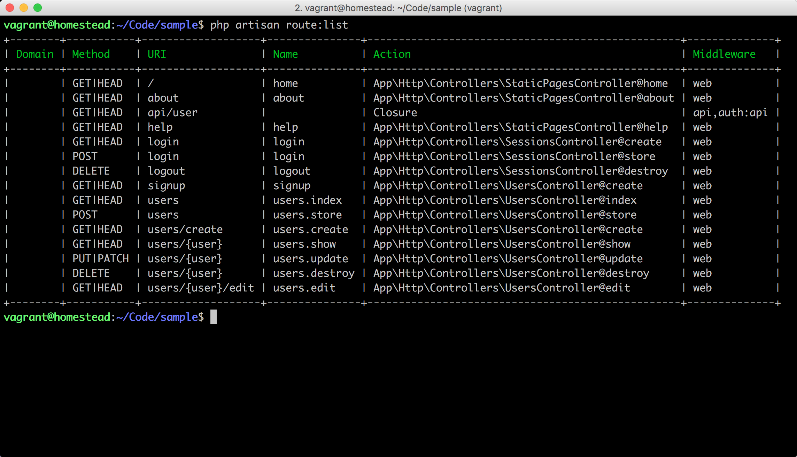
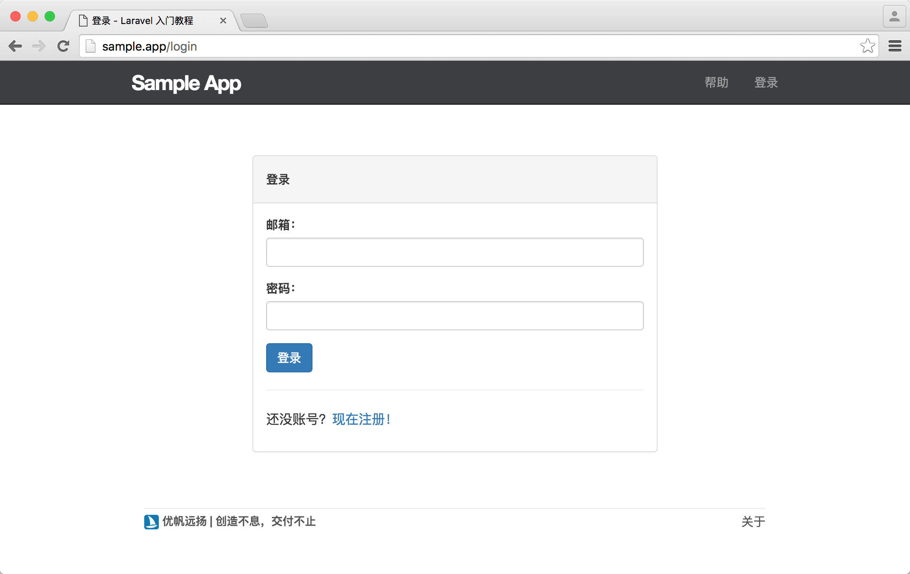
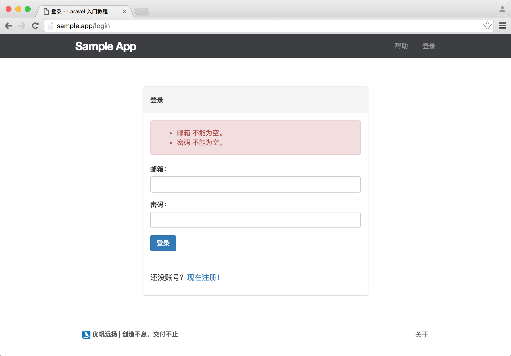
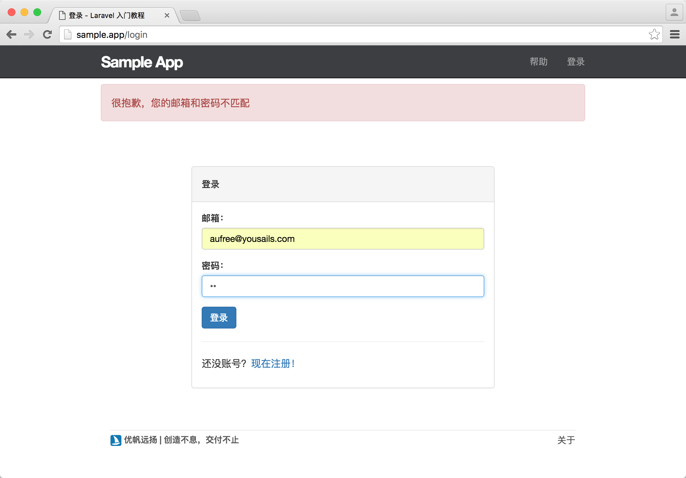
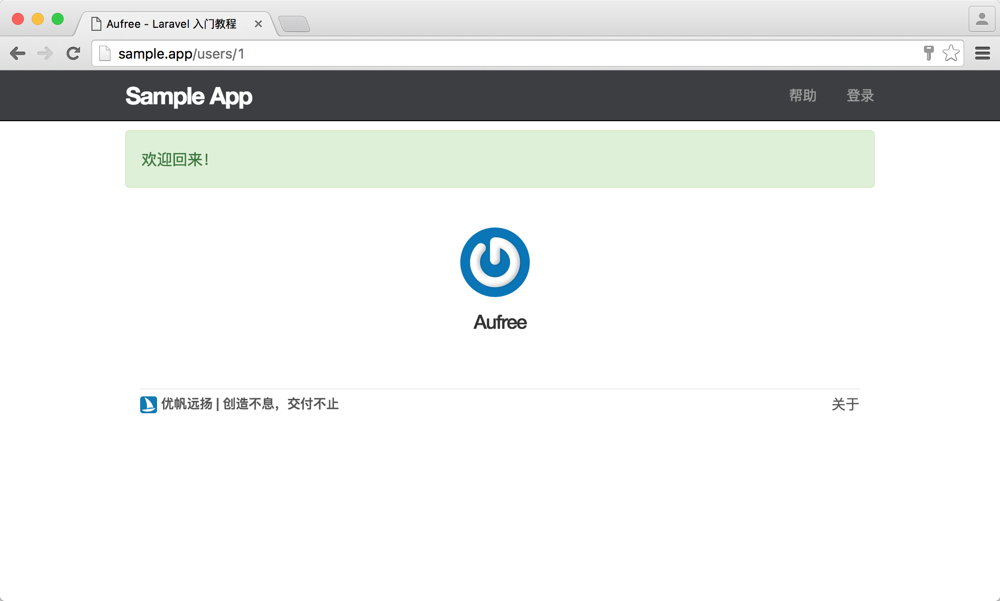

7.2. 会话
会话
由于 HTTP 协议是无状态的，我们无法在两个页面之间保证用户身份的同步，因此我们需要借助会话在浏览器中临时存储用户的身份信息，进而保证在同一浏览器中，用户在不同页面具有相同的登录状态。
接下来让我们来新建分支，开始进行登录和退出相关功能的开发。
$ git checkout master
$ git checkout -b login-logout会话控制器
首先我们要新建一个会话控制器，该控制器将用于处理用户登录退出相关的操作。你可以把会话理解为我们之前谈到过的资源，当用户登录成功时，会话将被创建；当用户退出登录时，会话会被销毁。只是在这里会话并不会保存到数据库中，而是保存在浏览器上。让我们运行下面命令来生成会话控制器。
$ php artisan make:controller SessionsController下面我们还需要对路由进行配置，添加一些接下来需要用到的路由，新增的路由分别对应会话控制器的三个动作：create, store, destroy。
routes/web.php
<?php
Route::get('/', 'StaticPagesController@home')->name('home');
Route::get('/help', 'StaticPagesController@help')->name('help');
Route::get('/about', 'StaticPagesController@about')->name('about');
Route::get('signup', 'UsersController@create')->name('signup');
Route::resource('users', 'UsersController');
Route::get('login', 'SessionsController@create')->name('login');
Route::post('login', 'SessionsController@store')->name('login');
Route::delete('logout', 'SessionsController@destroy')->name('logout');新增的路由功能如下。
| HTTP 请求 | URL | 动作 | 作用 |
|---|---|---|---|
| GET | /login | SessionsController@create | 显示登录页面 |
| POST | /login | SessionsController@store | 创建新会话（登录） |
| DELETE | /logout | SessionsController@destroy | 销毁会话（退出登录） |
你也可以使用 Laravel 提供的 route:list 命令来查看已添加的路由。
$ php artisan route:list
我们可以从上面的列表清晰的看到所有在 routes/web.php 中被定义好的路由，这将帮助我们更好的理解应用的基础架构。
接下来让我们先来完善会话控制器的 create 动作，为用户创建一个登录页面。
登录表单
在用户填写登录表单时，只需要用户提供个人邮箱账号和密码信息即可。由于我们前面给邮箱做了唯一性限制，因此能够保证所有的注册用户邮箱都不相同，为了确认登录者为邮箱拥有者本人，我们需要将邮箱与密码进行匹配，匹配成功的用户将通过认证并登录。
接下来让我们完善一开始创建的会话控制器，加入 create 动作，并返回一个指定的登录视图。
app/Http/Controllers/SessionsController.php
<?php
namespace App\Http\Controllers;
use Illuminate\Http\Request;
use App\Http\Requests;
class SessionsController extends Controller
{
public function create()
{
return view('sessions.create');
}
}让我们新建一个登录视图，并加上表单信息。
resources/views/sessions/create.blade.php
@extends('layouts.default')
@section('title', '登录')
@section('content')
<div class="col-md-offset-2 col-md-8">
<div class="panel panel-default">
<div class="panel-heading">
<h5>登录</h5>
</div>
<div class="panel-body">
@include('shared._errors')
<form method="POST" action="{{ route('login') }}">
{{ csrf_field() }}
<div class="form-group">
<label for="email">邮箱：</label>
<input type="text" name="email" class="form-control" value="{{ old('email') }}">
</div>
<div class="form-group">
<label for="password">密码：</label>
<input type="password" name="password" class="form-control" value="{{ old('password') }}">
</div>
<button type="submit" class="btn btn-primary">登录</button>
</form>
<hr>
<p>还没账号？<a href="{{ route('signup') }}">现在注册！</a></p>
</div>
</div>
</div>
@stop上面构建的登录表单有一行代码需要我们特别关注。
<form method="POST" action="{{ route('login') }}">我们在前面新增的路由中，有两个路由的命名完全一致，但由于我们在表单中清楚的指明了使用 POST 动作来提交用户的登录信息，因此 Laravel 会自动将该请求映射到会话控制器的 store 动作上。
Route::get('login', 'SessionsController@create')->name('login');
Route::post('login', 'SessionsController@store')->name('login');访问 http://sample.test/login 页面已能够看到登录页面能够正常显示，但现在表单仍处于不可用状态，因为我们还没有对用户发送的登录请求做任何处理。

认证用户身份
Laravel 默认提供的内置认证控制器功能非常强大，只需要你做简单的几行代码配置即可完成整个登录功能的构建。但在本教程中，为了让新手用户对整个用户登录流程有个更加清楚的了解，为此我们将使用手动认证的方式来一步一步实现用户的登录功能。
在我们成功构建用户的登录表单之后，我们需要在会话控制器中创建 store 动作来对用户提交的数据进行验证。
app/Http/Controllers/SessionsController.php
<?php
namespace App\Http\Controllers;
use Illuminate\Http\Request;
use App\Http\Requests;
class SessionsController extends Controller
{
public function create()
{
return view('sessions.create');
}
public function store(Request $request)
{
$credentials = $this->validate($request, [
'email' => 'required|email|max:255',
'password' => 'required'
]);
return;
}
}我们可以看到，在 store 动作中的数据验证与之前的有所不同，因为在这里只需要保证用户输入的值不为空且格式正确即可。
验证失败时的错误提示。

当用户填写的信息验证通过之后，我们还需要对用户提供的信息进行用户身份认证，因为验证通过只能说明用户提交的信息格式是正确的，并不能保证提交的用户信息存在于数据库中。
我们可以使用 Illuminate\Http\Request 实例来接收用户的所有输入数据，当我们需要取出 Request 实例的单个值时，可以使用以下方法：
$request->email;当 $request 请求中包含 email 字段时，上面这行代码将返回邮箱信息。
借助 Laravel 提供的 Auth 的 attempt 方法可以让我们很方便的完成用户的身份认证操作，如下所示：
if (Auth::attempt(['email' => $email, 'password' => $password])) {
// 该用户存在于数据库，且邮箱和密码相符合
}attempt 方法会接收一个数组来作为第一个参数，该参数提供的值将用于寻找数据库中的用户数据。因此在上面的例子中，attempt 方法执行的代码逻辑如下：
- 使用
email字段的值在数据库中查找； - 如果用户被找到：
1). 先将传参的password值进行哈希加密，然后与数据库中password字段中已加密的密码进行匹配；
2). 如果匹配后两个值完全一致，会创建一个『会话』给通过认证的用户。会话在创建的同时，也会种下一个名为laravel_session的 HTTP Cookie，以此 Cookie 来记录用户登录状态，最终返回true；
3). 如果匹配后两个值不一致，则返回false； - 如果用户未找到，则返回
false。
结合 attempt 方法对用户身份进行认证的具体代码实现如下，使用 Auth 前需要对其进行引用。
app/Http/Controllers/SessionsController.php
<?php
namespace App\Http\Controllers;
.
.
.
use Auth;
class SessionsController extends Controller
{
.
.
.
public function store(Request $request)
{
$credentials = $this->validate($request, [
'email' => 'required|email|max:255',
'password' => 'required'
]);
if (Auth::attempt($credentials)) {
// 登录成功后的相关操作
} else {
// 登录失败后的相关操作
}
return;
}
}消息提示和页面重定向
现在 store 方法已经能够完成用户身份的认证操作了，接下来我们需要针对用户认证成功或失败的情况做不同处理。在用户登录失败时，我们需要在顶部显示提示信息，明确告诉用户登录失败的原因，并将页面重定向回登录页面。
在用户登录失败之后，我们使用以下代码来进行消息提示。
session()->flash('danger', '很抱歉，您的邮箱和密码不匹配');由于 danger 在 Bootstrap 中有特殊含义，借助我们在前面章节中定义的消息提示局部视图，可以使得页面上的消息提示更加美观。
在用户登录成功之后我们还需要将用户重定向至其个人页面，让用户可以在第一时间查看到自己的个人信息。而当用户登录失败时，则需要将页面重定向回登录页面，让他尝试重新登录。接下来让我们接着完善 store 方法，加入消息提示和页面重定向操作。
app/Http/Controllers/SessionsController.php
<?php
namespace App\Http\Controllers;
.
.
.
class SessionsController extends Controller
{
.
.
.
public function store(Request $request)
{
$credentials = $this->validate($request, [
'email' => 'required|email|max:255',
'password' => 'required'
]);
if (Auth::attempt($credentials)) {
session()->flash('success', '欢迎回来！');
return redirect()->route('users.show', [Auth::user()]);
} else {
session()->flash('danger', '很抱歉，您的邮箱和密码不匹配');
return redirect()->back();
}
}
}我们在 store 方法内使用了 Laravel 提供的 Auth::user() 方法来获取 当前登录用户 的信息，并将数据传送给路由。
这时如果尝试输入错误密码则会显示登录失败的提示信息。

登录成功后，重定向到用户个人页面。
